Engineering Projects
A selection of academic and research related projects that I contributed to, please select a card to view my work!
Master's Thesis: Medical AI Research
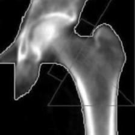
Using DXA images and clinical risk factors to predict fracture risk
Click here to view →SureStride: Engineering Capstone Project
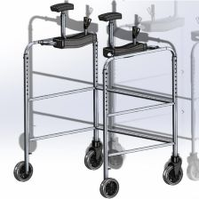
An intermediate assistive mobility device for older adults
Click here to view →BoundLess Crutches: Pre-Capstone Project
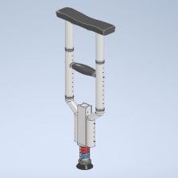
Spring-damper loaded system to mitigate crutch palsy symptoms
Click here to view →Biomedical Instrumentation: Biosignal Measurement
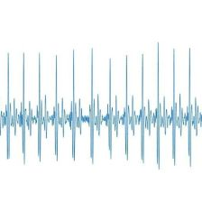
Investigating electrical biosignals
Click here to view →Closed-Loop Light-Level Controller Using Elegoo UNO R3
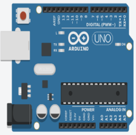
Comparing controllers in a closed-loop control system
Click here to view →Gait-Guide: Remote Gait Lab Project
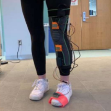
Developing a Remote Gait Lab
Click here to view →Closed-Loop Light-Level Controller Using Elegoo UNO R3
Project Purpose
This was a self directed project to further the understanding of closed loop control systems and embedded programming using an Arduino interface.
Project Objective
The objective of this project was to create a closed-loop controller to maintain a user-selected light level in an LED using an LDR sensor. Proportional (P), Proportional-Integral (PI), and Proportional Integral Derivative (PID) controllers were evaluated in a step-response experiment.
Parts List
• Elegoo UNO R3 (Arduino Uno compatible) + USB cable
• Breadboard
• Photoresistor (LDR)
• 10 kΩ resistor (for LDR divider)
• 10 kΩ potentiometer (for setpoint)
• LED
• 220 Ω resistor (for LED)
• Jumper wires (male-to-male)
Electrical Circuit Design

Experimental Circuit Design
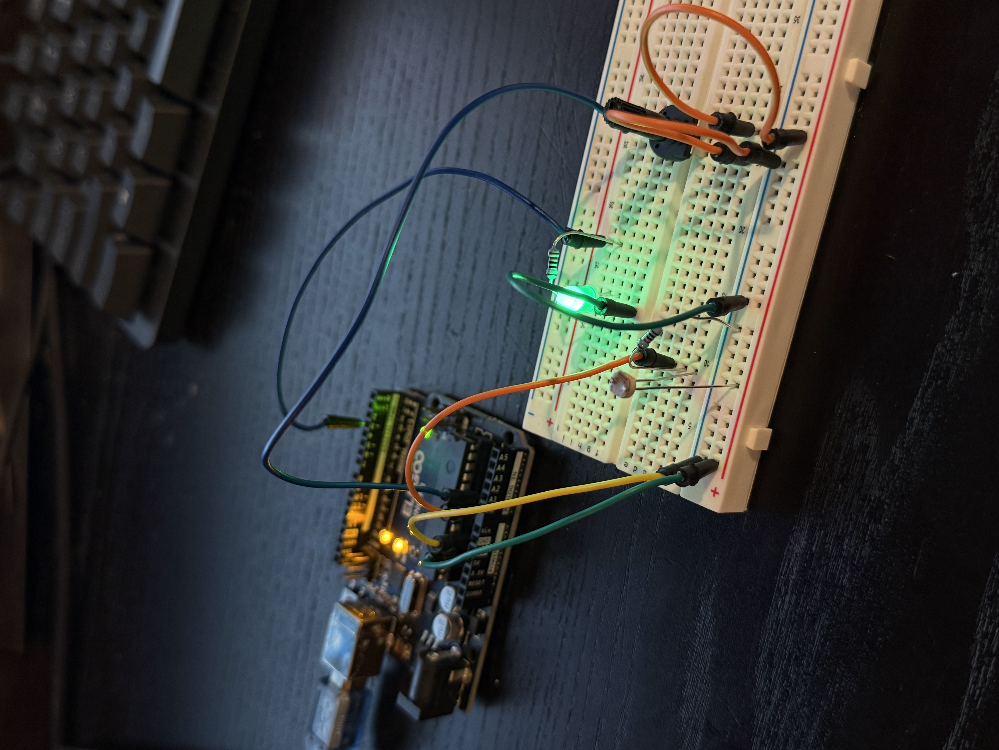
Physical Test Setup
Justification
This closed-loop light control system uses an Elegoo UNO R3 to read a photoresistor (LDR) and adjust an LED’s brightness via PWM. The LDR forms a voltage divider with a 10 kΩ resistor, producing a voltage proportional to ambient light, while a 10 kΩ potentiometer sets the desired light level. The Arduino continuously calculates the error between the measured and desired light and applies a PID controller (Kp = 1.0, Ki = 0.5, Kd = 0.05) to adjust LED brightness. The proportional term provides a direct response, the integral term corrects steady-state error, and the derivative term dampens oscillations. Jumper wires, a breadboard, and a 220 Ω resistor for the LED allow easy, safe connections. This combination of components provides a simple, interactive demonstration of PID-controlled feedback.
Results
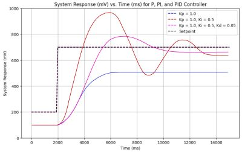
The PID controller with Kp = 1.0, Ki = 0.5, and Kd = 0.05 worked well because the proportional term provided a strong immediate response to light deviations, the integral term corrected steady-state error, and the small derivative term dampened oscillations, resulting in smooth, stable control. PID is the best choice for this system because it can handle both steady-state errors and dynamic changes in light, unlike simple on/off or proportional-only control. The potentiometer allows easy adjustment of the setpoint, letting the system respond to different ambient light conditions, which could be applied in a real-world scenario, such as an automatic night light that maintains a desired brightness level depending on the surrounding light.
Conclusion
This project was an excellent hands-on practice with embedded systems, Arduino programming, and closed-loop control. It demonstrated how sensors, actuators, and PID algorithms can work together to automatically maintain a desired condition, providing practical experience in designing, tuning, and testing a real-time feedback system. By adjusting the potentiometer and observing the LED response, we gained a clear understanding of system dynamics, PID behavior, and the fundamentals of control engineering in a simple, interactive setup.
Closed Loop Control
Click to View!Master's Thesis: Medical AI Research
The Problem
Bone remodeling is a healthy, dynamic process where old bone is replaced by new bone. In the human body, this process is governed by the osteoblasts and the osteoclasts; specific cell types responsible for building and resorbing bone.
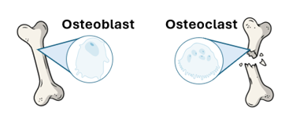
As humans age, their osteoblasts and osteoclasts work synchronously to build their bones stronger. However, when peak bone mass is reached at about the age of 30, bone resorption can begin to outpace bone formation, which is when osteoporosis occurs.
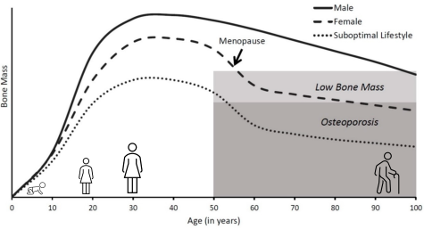
Osteoporosis causes the bones to become very porous and susceptible to fracture, which is why early diagnosis is very important.
Osteoporosis is diagnosed through Dual X-Ray Absorptiometry (DXA) imaging, which is a low radiation X-Ray imaging machine that can calculate the patient's Bone Mineral Density (BMD).
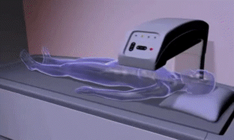
Osteoporosis is then diagnosed based on BMD, however many individuals with a normal BMD value for their age, sex, and ethnicity will still experience a fragility fracture.
This proves that bone fragility and inherent fracture risk cannot be determined from BMD alone.
The Impact
Fragility fractures are often the first symptom of osteoporosis, which makes it challenging to accurately diagnose the disease before a fracture has occurred.
Hip fractures can be deadly. In Canada, 30,000 occur annually, and 50% of patients lose the ability to walk independently.
Mortality rates can reach as high as 30% within just the first 6 months post-fracture, and hip fractures result in $1.1 billion in direct healthcare costs annually.
The Solution
Machine learning has the potential to improve fracture risk prediction.
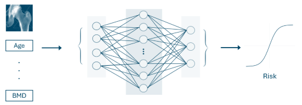
Computers have the ability to decipher complex, non-linear, high-dimensional relationships that the human brain cannot.
This thesis aims to investigate if DXA images, alongside clinical risk factors, have the potential to improve fracture risk prediction.
Primary Research Objective
Evaluate the predictive power of DXA images and Clinical Risk Factors (CRFs) in quantifying hip fracture risk
SureStride: Engineering Capstone Project
The Problem
Older adults in nursing homes who use assistive mobility devices (AMDs) and have an increased risk of falling require an intermediate AMD without the stability limitations of a walker or autonomy limitations of a wheelchair to increase their quality of life, physical activity, and safety.
The Impact
Approximately 25% of seniors in nursing homes use wheelchairs, limiting their physical activity, and leading to dependence on others. Wheelchair-use is also correlated with an increased risk of depression, possibly due to restricted mobility and ability to socialize with others. The social impacts of our design are to increase the autonomy of users, and consequently, their quality of life. The safety and health impacts of our design are therefore to decrease fall risk for users and allow for physical activity.
The Solution
Design a mechatronic device with automatic electrical and mechanical resistance braking that is size adjustable and provides improved upper body support from a traditional walker. Ensure that the device initiates automatic braking if enhanced acceleration is detected, extreme wobbling is sensed, or an obstacle is detected.
Preliminary Design Iteration
Many initial concepts were explored, including a collapsible design. Once the prototype was built, it proved extremely unstable due to an imbalance in bending moments. This exercise reaffirmed the value of rapid prototyping. Feedback from stakeholders, including nurses from assisted living homes, emphasized that no device could restrain the user, while biomechanics experts advised that a collapsible design would likely be too weak and not feasible within the project timeframe. Based on this guidance, the collapsible mechanism was removed from the final design.
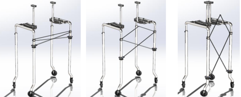
Preliminary CAD of collapsible design
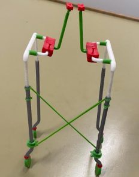
Preliminary prototype (PLA)
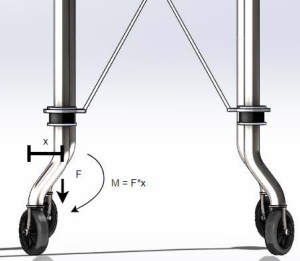
Imbalance in bending moment
The Final Solution
Design a mechatronic device with automatic electrical and mechanical resistance braking that is size adjustable and provides greater upper body support.
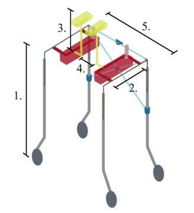
Size adjustability diagram
Adherence to Regulatory Standards
- The device followed ISO 11199-3:2005, covering strength, durability, stability, braking, adjustment.
- IEC 80601-2-78:2019 compliance ensured electrical and mechanical safety for medical devices, including protection from shocks, fire, moving parts, and electromagnetic interference.
- CAN/CSA-Z604-03 (R2008) specified Canadian requirements for transportable mobility aids (design, labeling, testing, performance).
- The prototype used aluminum; full compliance requires final materials, exact dimensions, and complete testing.
Final Mechanical Outcomes
The mechanical prototype consisted of aluminum tubing that provided full body support, size adjustability in 5 locations, mechanical disk brakes, and front swivel wheels for easy turning.
Final SolidWorks CAD model
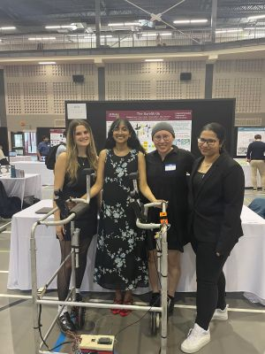
Final manufactured assembly at Capstone Showcase
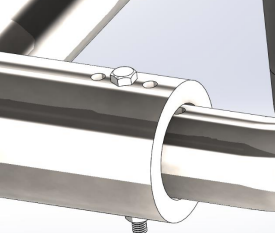
CAD highlight of size adjustability
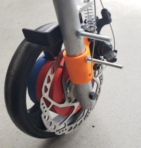
Mechanical disk brakes
Mechanical Validation
The device was validated for loading up to 100kg through Finite-Element Analysis (FEA):
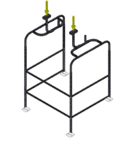
Mesh for FEA
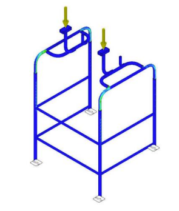
Complete FEA for 100 kg loading (491N per support)
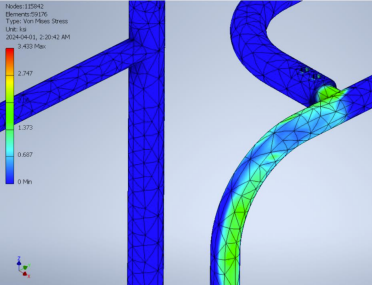
FEA result at bend: Safe loading for extreme maximum
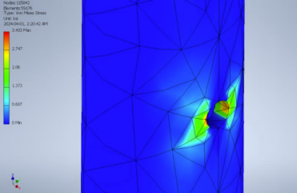
FEA result at hole: Safe loading for extreme maximum
Final Electrical Outcomes
The final electrical system used sensors to detect speed, wobble, and nearby obstacles, allowing the walker to identify potential fall risks. Based on these inputs, linear actuators automatically applied either light or strong braking resistance. User interaction was kept simple through power and calibration switches, along with traffic-style LED feedback: green LED for power, yellow LED for minor braking, yellow+red LED for major braking. All components were powered by a 12 V battery and controlled by an ESP32 microcontroller, which could also send braking data to a PC over Wi-Fi.
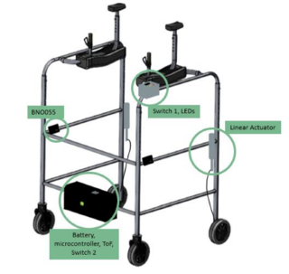
Location of electrical components on mechanical assembly
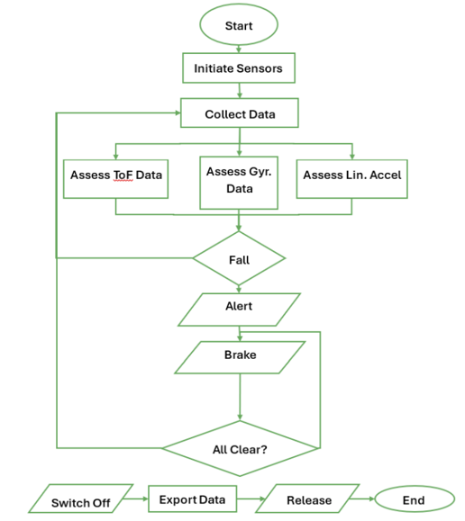
Electrical logic flow chart
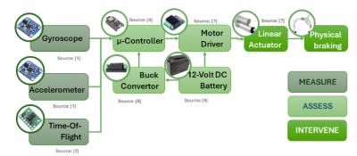
Component purpose diagram
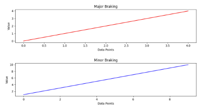
Major and minor braking
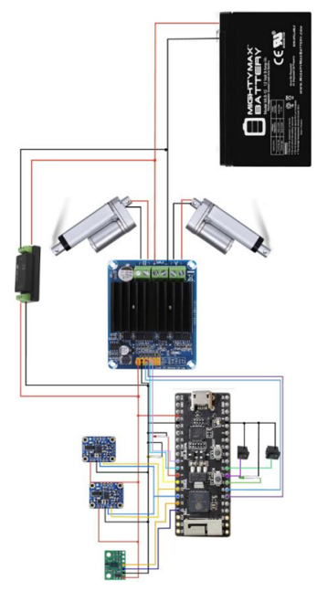
Electrical assembly for linear actuators used to drive automatic resistance braking
Electrical Validation
Various test cases were trialed to validate the electrical design:
Switches: Verified by measuring voltage changes when toggled — confirmed functional.
LEDs: Powered using a 3.3 V source with resistors — all illuminated correctly.
Linear Actuators: Tested with 12 V supply — successfully extended and retracted by reversing polarity.
Buck Converter: Output measured at 3.3 ± 0.02 V with minimal oscillation — passed.
Battery: 12 V output confirmed at 12 ± 0.05 V — passed.
Acceleration Sensor: Detected clear differences between soft and strong pushes; minimal acceleration during steady walking.
Time-of-Flight Sensor: Distance readings accurate to within 1 mm when compared to manual measurements.
Wobble Detection (Gyroscope): Simulated lateral falls were successfully detected using Euler angle thresholds.
Final Result
Our prototype demonstrated full structural safety under load testing, reliable electrical performance across all use cases, and met all primary design objectives for stability, adjustability, and usability.
Our findings were published and presented at the 2024 IEEE International Conference on Smart Mobility!
🏆 The project was selected among top submissions for presentation at the iBioMed Project Showcase, recognizing our team's innovation and hard work!
Personal Contributions
During this project, I contributed greatly to the mechanical subteam. I performed the complete mechanical validation process and designed all CAD models. I contributed equally to the discussion of test plans for validation testing, group reports, and manufacturing the device.
BoundLess Crutches: Pre-Engineering Capstone Project
The Problem
Traditional axillary crutches transfer high forces directly to the user’s arms and shoulders, which can lead to nerve compression. Additionally, existing crutches are bulky, difficult to transport, and often unsafe on uneven terrain. Current portable crutch designs either require complicated assembly or risk losing parts, and spring-based crutches lack damping, which can create unstable forces on the user. There is no solution that simultaneously reduces harmful forces, improves portability, and maintains ease of use.
The Impact
The limitations of existing crutches can result in short- and long-term health consequences, including radial, ulnar, and median nerve palsies, which cause numbness, reduced dexterity, and muscle weakness. Users may also face inconvenience and safety risks due to the crutches’ size, poor traction on uneven terrain, and difficult portability. The lack of a comprehensive solution leaves users vulnerable to injury and limits mobility options for those who rely on crutches as their primary assistive device.
The Solution
Design a lightweight, durable axillary crutch with a spring-damper system to reduce force on the arms and shoulders, featuring a compact, easy-to-fold mechanism and adjustable for various body types and terrains.
Preliminary Designs
Many preliminary designs were created during the design process to optimize the collapsible mechanism of the design:
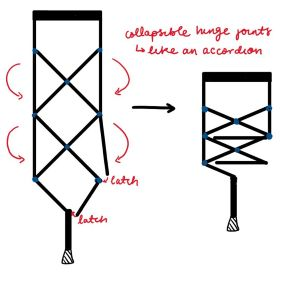
Collapsible truss mechanism
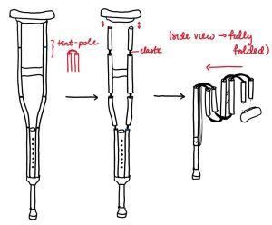
Detachable tent pole mechanism
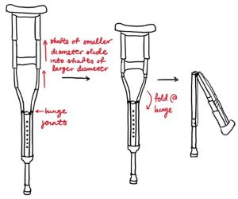
Telescoping pole mechanism
Ultimately, it was decided that each of these designs had the potential to lack mechanical durability or would be difficult to actuate.
Final Design
The final design inclluded a custom locking mechanism with an internal spring to be able to assemble and disassemble both sides of the device quickly and simultaneously. It also contained a spring/damper system with an adjustable preload mechanism for variable user weight and an adjustable crutch base for varied terrain.
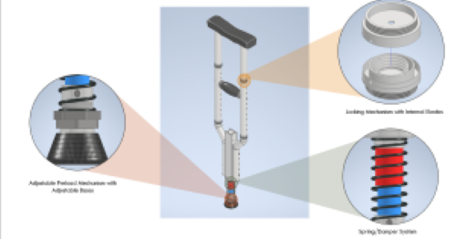
Full design in CAD
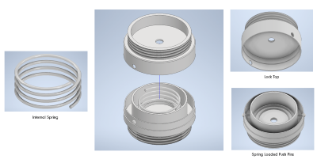
Detailed CAD of locking mechanism
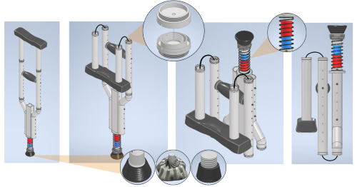
Device disassembly
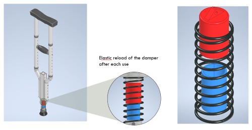
Spring/damper system with elastic reload
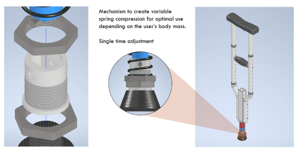
Mechanism to create variable spring compression
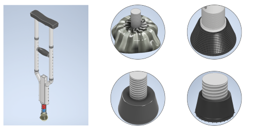
Variable design bases
Design Validation
The objectives of this design were to: 1. Reduce the maximum force applied under the arm and at the hand during loading. 2: Reduce the rate of change of applied force through the loading phase.
The parameters to optimize were: 1. Minimize the spring constant required to expand the crutch back to its original length once the loading is removed. 2. Minimize the damping constant that prevents oscillations when loaded.
It was also critical to determine the points of failure of the device and compare the factor of safety for each potential failure locus against the overall design factor.
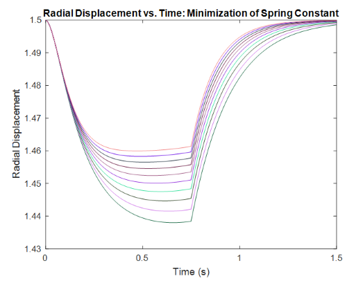
The minimum spring constant was found to be 22kN/m, based on the criteria that the crutch re-expands to its initial length by the end of the swing phase
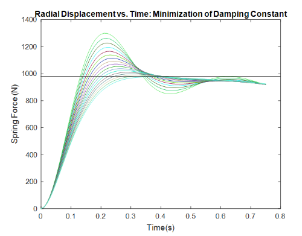
The minimum damping constant was found to be 2.6kNs/m, based on the criteria that the maximum force did not exceed body weight and does not oscillate
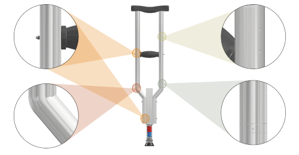
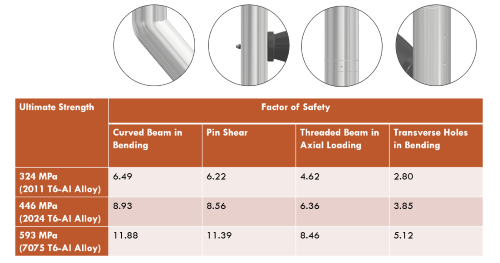
The following locations were found to be points of weakness
Final Result
The design was found to reduce peak shoulder load, putting less strain on the brachial plexus and successfully mitigating intense loading on the shoulder during crutch use. The disassembly mechanism was confirmed by stakeholders to be a good mechanism of transporting the device.
Personal Contributions
During this project, I contributed to the CAD modeling and the numerical optimization through researching and assisting with the LaGrangian Analysis to optimize the parameters of the spring/damper system.
Biomedical Instrumentation: Biosignal Measurement Laboratories
EMG Data Acquisition
Investigating EMG Signal
The purpose of this exercise was to collect EMG data using a printed circuit board and EMG electrodes and to examine how the EMG signal differs between slow isometric, slow dynamic, and rapid dynamic contractions.
During isometric contractions, the muscle generates force without changing length. During dynamic contractions, the muscle changes length.
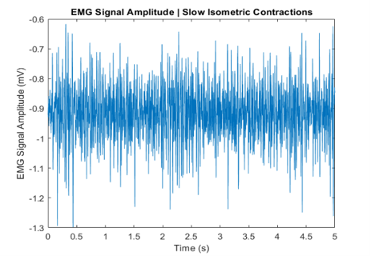
Time domain plot for slow isometric contraction
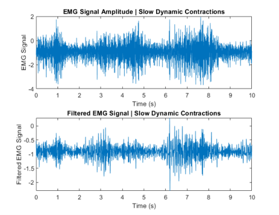
Time domain plot for slow dynamic contraction, with 2Hz low-pass filter from PCB
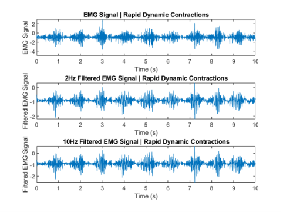
Time domain plot for rapid dynamic contraction, with 2Hz low-pass filter and 10Hz low-pass filter
Envelope plots were created to visualize the overall muscle activation patterns. These plots are useful for dynamic contractions because muscle activity changes over time, while isometric contractions are relatively steady, so smoothing adds little information.
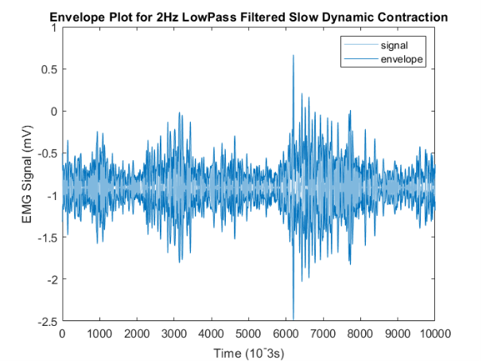
Time domain (envelope) plot for slow dynamic contraction, with 2Hz low-pass filter from PCB
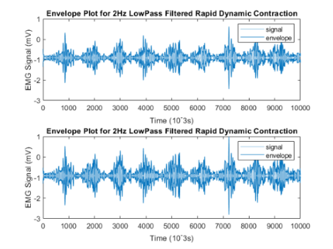
Time domain (envelope) plot for rapid dynamic contraction, with 2Hz low-pass filter and 10Hz low-pass filter
The EMG signal was transformed to the frequency domain to observe how motor units are recruited. Amplitude and phase plots were calculated, but only phase plots are shown.
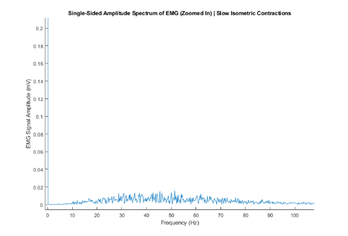
Frequency amplitude plot for slow isometric contraction
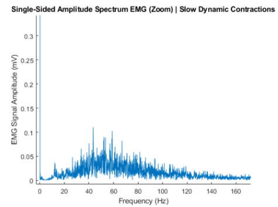
Frequency amplitude plot for slow dynamic contraction, with 2Hz low-pass filter from PCB
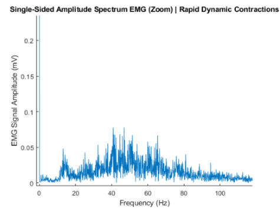
Frequency amplitude plot for rapid dynamic contraction, with 2Hz low-pass filter and 10Hz low-pass filter
It was expected that the slow isometric contraction plot would have values concentrated in low frequency with little change and smaller amplitudes, which was observed.
It was expected that the slow dynamic contraction plot would have most EMG power in low frequencies, as motor units are recruited gradually and firing rates are relatively slow. This was also observed.
Finally, it was expected that the rapid dynamic contraction plot would have higher frequencies that follow the rapid recruitment of additional motor units and increased firing rates, which was also seen.
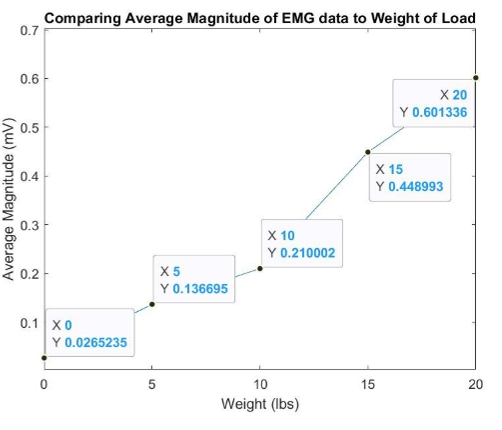
EMG signal amplitude increased with weight, which was expected as more motor units would be recruited to support a larger force.
ECG Data Acquisition
Investigating ECG Signal
The purpose of this exercise was to acquire ECG data using a printed circuit board, an oscilloscope, and a 3-Lead ECG and observe how the waveform changes under various conditions.
The first exercise was to observe how the waveform changed on the oscilloscope for patients with three different normal sinus rhythms (80, 100, and 120 BPM)
Normal sinus rhythm ECG patient with a frequency of 80 BPM

Normal sinus rhythm ECG patient with a frequency of 100 BPM

Normal sinus rhythm ECG patient with a frequency of 120 BPM
ECG rhythm was also explored using a human participant with Lead I, Lead II, and Lead III configurations
Lead I Configuration
Lead II Configuration
Lead III Configuration
Lead I, II, and III ECGs look different because each lead measures the heart’s electrical activity from a different angle across the frontal plane, capturing distinct voltage patterns depending on the orientation of the depolarization wave relative to the lead.
Lead II is the most popular for routine ECG monitoring because its axis aligns closely with the heart’s normal depolarization direction, from the right atrium to the left ventricle, producing the largest and clearest P waves and QRS complexes, which makes it easiest to detect arrhythmias and analyze heart rhythm.
One ECG signal trial was processed in MATLAB to practice using a bandpass filter to remove 60Hz electrical interference noise.
Demonstration of removal of 60Hz powerline interference using bandpass filter
Final Result
In conclusion, the EMG activity behaved as expected, and this was a good exercise in understanding how EMG reflects different contraction types. The envelope plots clearly showed the timing and intensity of activation during slow dynamic movements, while the frequency analysis highlighted that slow contractions predominantly involve low-frequency motor unit activity. The ECG plots behaved as expected, and it was very interesting to learn to use the different equipment in the laboratory!
Personal Contributions
During this project, I contributed to data collection, signal processing, and MATLAB analysis for EMG and ECG signals.